Hartmann-Elf dreht das Spiel gegen den Spitzenreiter
Mit einer leidenschaftlichen und kämpferisch starken Leistung hat unsere U17 in Kalteneber ein echtes Ausrufezeichen gesetzt. Gegen den Tabellenführer bewies die Hartmann/Seipel-Elf große Moral, ließ sich von einem frühen Rückstand nicht aus der Ruhe bringen und drehte die Partie am Ende verdient zu einem 3:1-Erfolg.
Früher Rückstand als Weckruf
Der Start in die Partie verlief zunächst alles andere als nach Wunsch. Bereits in der 5. Minute nutzten die Gäste einen Ballverlust in unserer Defensive eiskalt aus. Muchin traf früh zum 0:1 (5.) und brachte den Spitzenreiter damit in Führung. Doch dieser Rückschlag hatte auch eine positive Wirkung: Unsere Jungs waren plötzlich hellwach. Mit viel Einsatz, Laufbereitschaft und Druck nach vorne arbeiteten sie sich zurück ins Spiel und erzwangen immer wieder gefährliche Standardsituationen.
Kränzel köpft den verdienten Ausgleich
Eine dieser Standards brachte schließlich den verdienten Ausgleich. Nach einer Ecke stieg Josef Kränzel im Strafraum am höchsten und köpfte den Ball in der 20. Minute zum 1:1-Ausgleich (20.) ins Netz.
Der Treffer gab sichtbar Auftrieb. Die Blau-Weißen waren nun voll im Spiel und hielten gegen den Spitzenreiter mit viel Leidenschaft dagegen.
Intensives Kampfspiel nach der Pause
In der zweiten Halbzeit entwickelte sich auf dem tiefen Platz in Kalteneber ein echtes Kampfspiel. Viele Zweikämpfe, viel Einsatz und kaum ein Ball wurde verloren gegeben.
Gerade in dieser Phase zeigte die Mannschaft ihre Stärke. Besonders das aggressive und konzentrierte Zweikampfverhalten stach hervor. Jeder Spieler war bereit, für das Team zu arbeiten und sich in jeden Zweikampf zu werfen.
Kränzel schnürt den Doppelpack
Erneut war es eine Standardsituation, die unsere Jungs jubeln ließ. Nach einer weiteren Ecke blieb Josef Kränzel im Strafraum hellwach, setzte energisch nach und brachte den Ball in der 55. Minute zur 2:1-Führung über die Linie.
Mit seinem zweiten Treffer des Tages drehte er die Partie endgültig zu unseren Gunsten und krönte damit eine starke Leistung.
Kopach macht alles klar
Der Spitzenreiter versuchte danach noch einmal, Druck aufzubauen. Doch unsere Mannschaft verteidigte konzentriert und blieb über schnelle Umschaltmomente gefährlich.
Einer dieser Angriffe brachte schließlich die Entscheidung. Nach einem starken Umschaltmoment blieb Artem Kopach in der 74. Minute cool und traf zum 3:1-Endstand.
Eine geschlossene Mannschaftsleistung
Mit dem Schlusspfiff war die Freude groß. Die Hartmann/Seipel-Elf zeigte gegen den Tabellenführer eine beeindruckende Teamleistung. Kampfgeist, Leidenschaft und der Wille, gemeinsam zu arbeiten, zeichneten diesen Erfolg aus.
Spieldaten
1. SC 1911 Heiligenstadt U17 – FC Thüringen Jena 3:1 (1:1)
1. SC 1911 Heiligenstadt U17
Biedermann – Henkel – Kränzel – Drange (75. Meier) – Klinge (79. Herwig) – Artur Kopach – Nolte (41. Mecke) – Voitsberger (80.+5 Kruse) – Fromm (80. Pandrock) – Rotter – Artem Kopach (80.+7 Hentrich)
Schiedsrichter
Ghanem
Tore:
0:1 Muchin (5.), 1:1 Kränzel (20.), 2:1 Kränzel (55.), 3:1 Artem Kopach (74.)
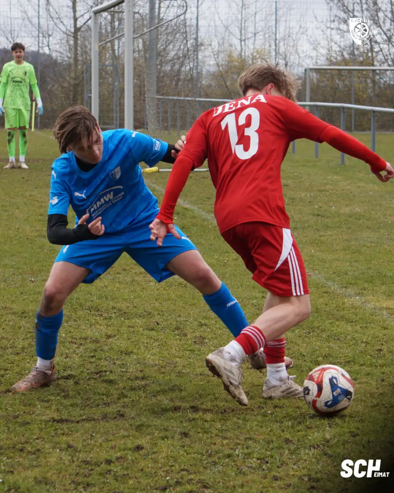
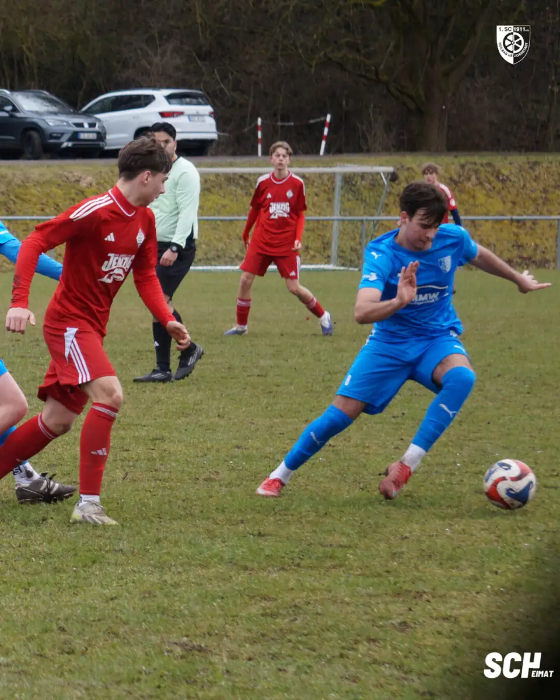
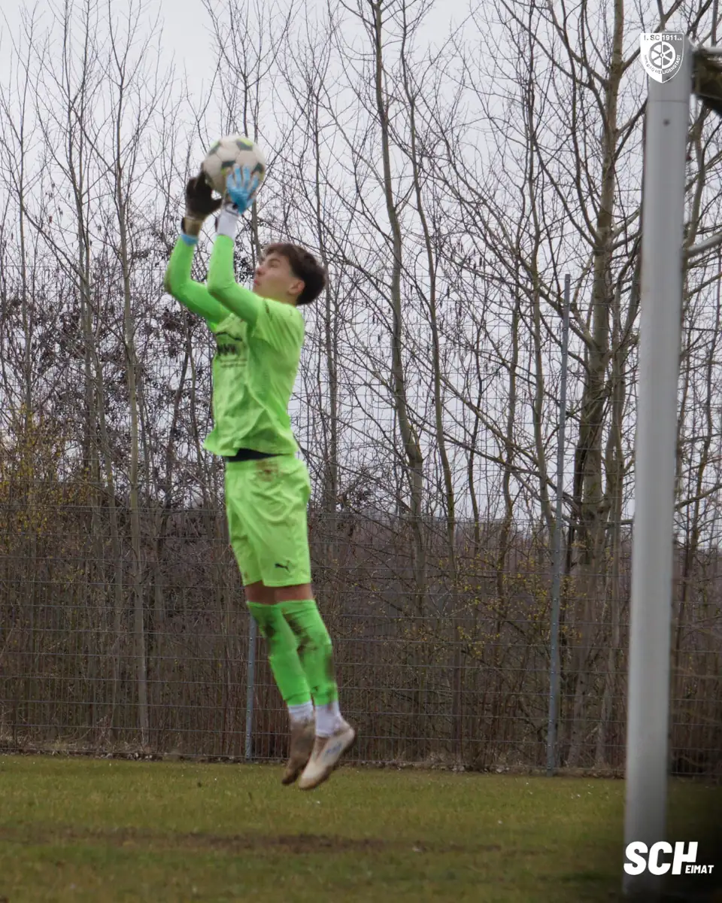
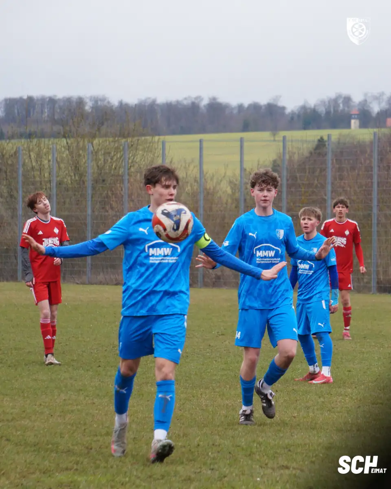
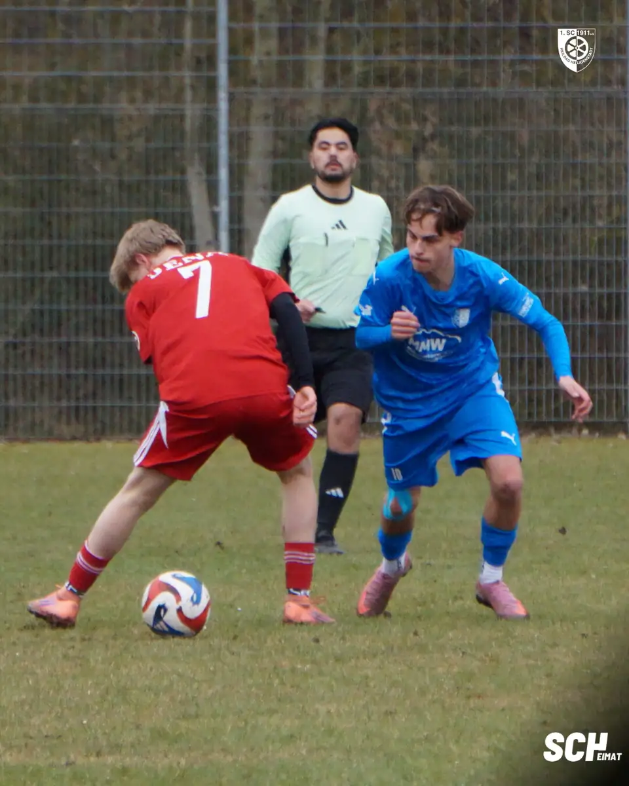
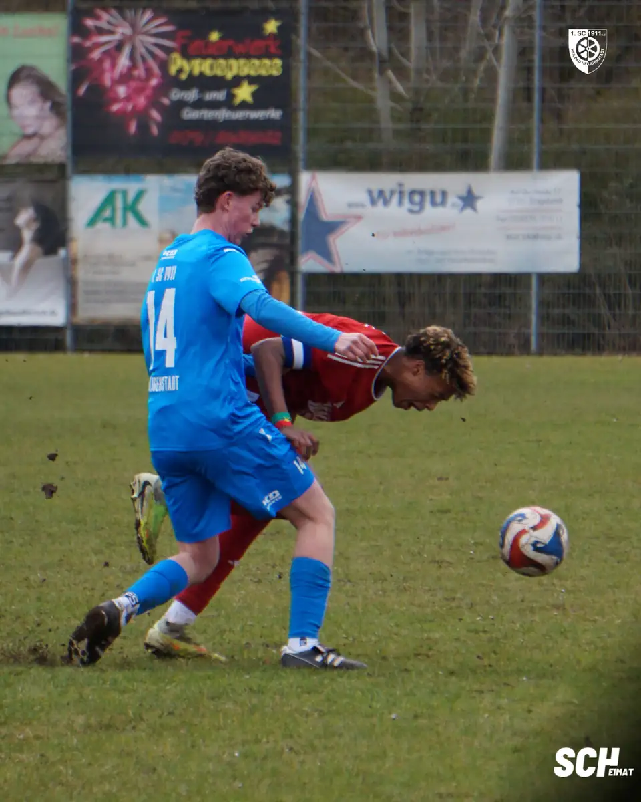
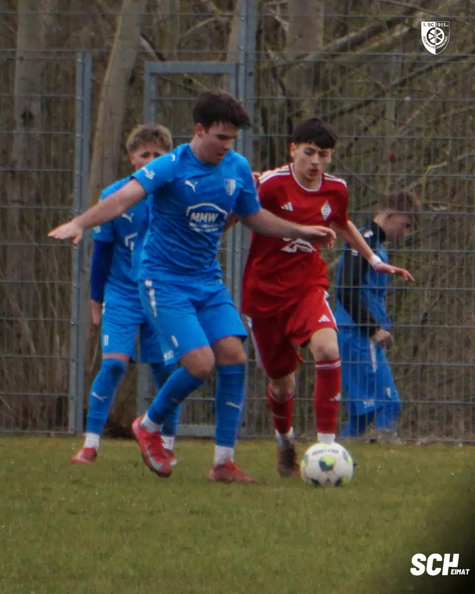
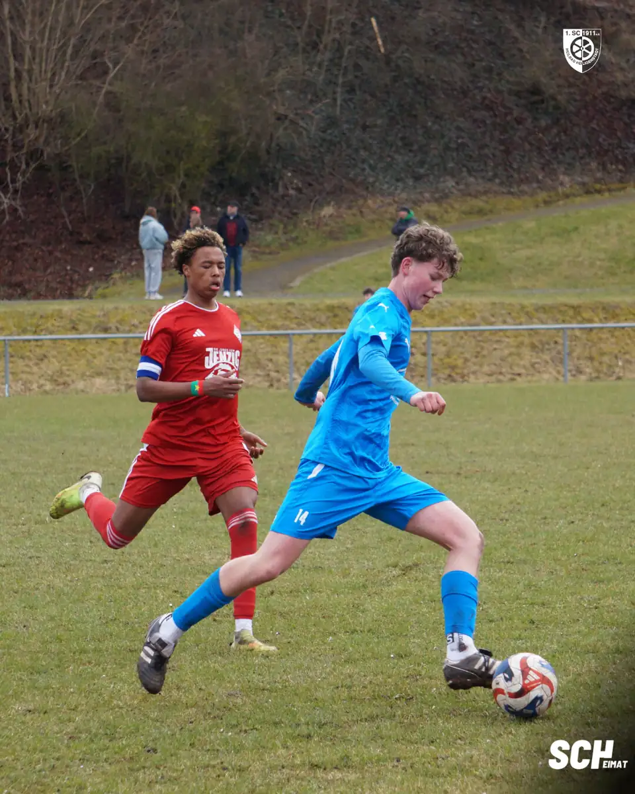
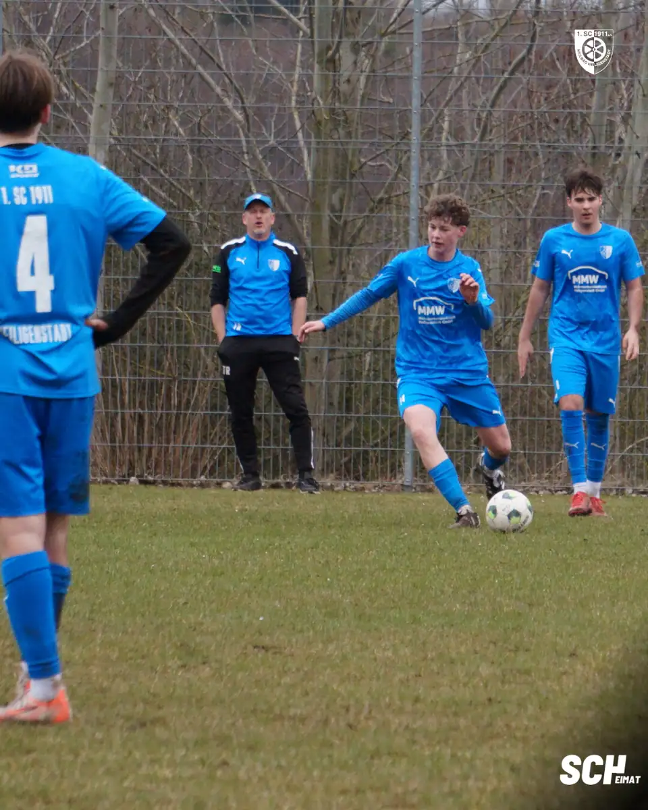
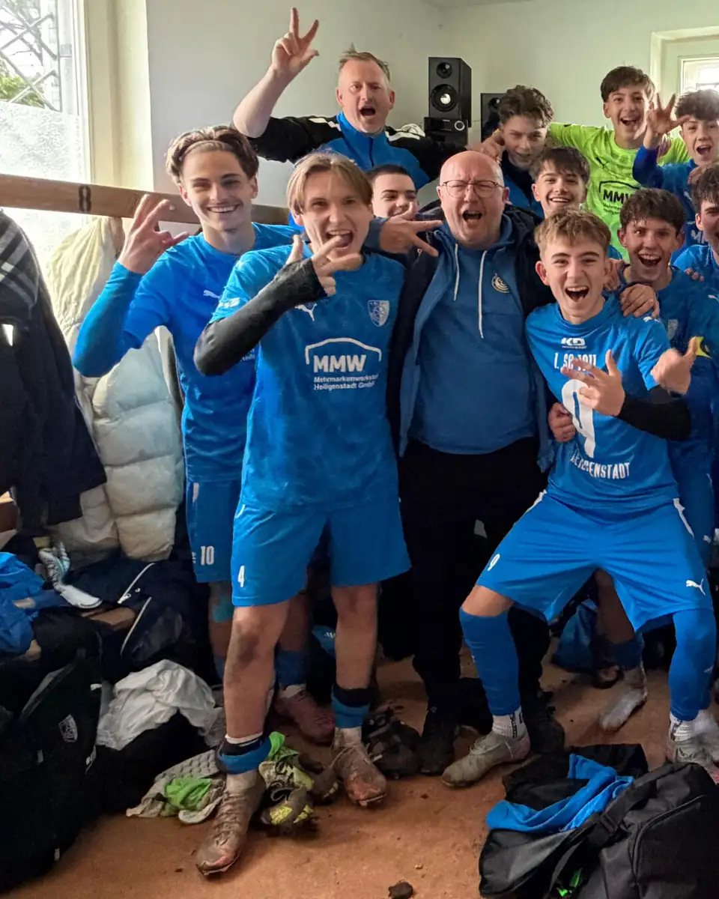
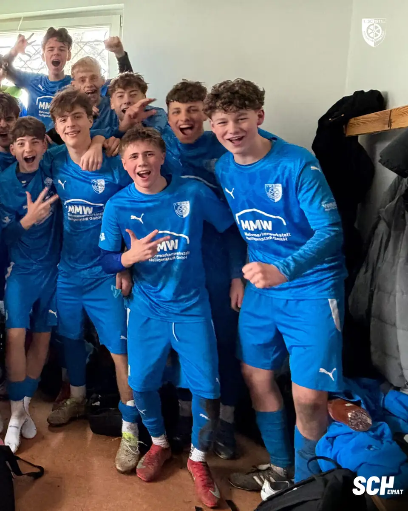